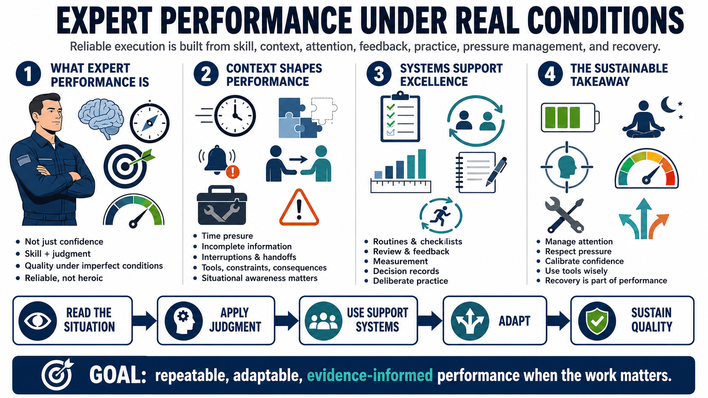

Course Summary and Key Takeaways
Connecting to LMS... Progress: in progress

Narration
Expert performance is reliable execution shaped by skill, context, attention, feedback, pressure management, practice, and recovery. It is not the same as confidence or constant peak intensity. Strong performers understand the domain, read the situation, apply judgment, and use systems that help them maintain quality when conditions are imperfect.
A major theme is that performance lives in context. Real-world constraints change what good performance requires. Time pressure, incomplete information, interruptions, tools, handoffs, and consequences all shape the work. Expert performers build mental models and situational awareness so they can recognize meaningful cues, update assumptions, and adapt when the first pattern no longer fits.
Strong performers also build systems around their work. They use routines, review, measurement, checklists, peer feedback, decision records, and deliberate practice. These supports make excellence less dependent on mood or memory. They also make improvement visible, because the performer can compare decisions, outcomes, and processes over time.
The final takeaway is sustainable, adaptable, evidence-informed performance under real conditions. The goal is not heroic effort. The goal is repeatable capability when the work matters. That means practicing deliberately, managing attention, respecting pressure, calibrating confidence, using tools wisely, and treating recovery as part of the performance system.